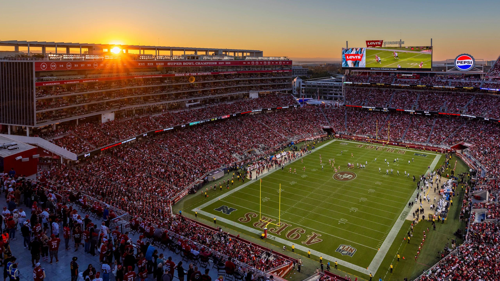
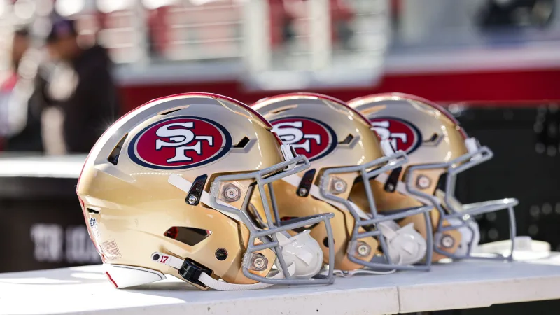
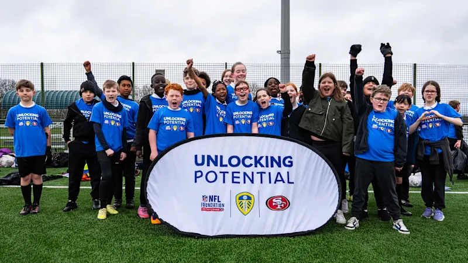
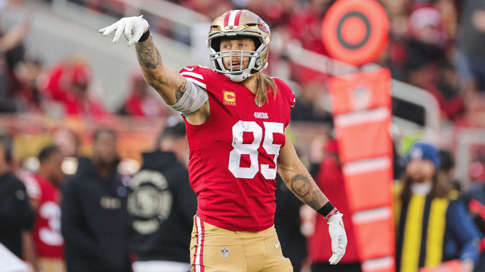

Message to the Faithful
From the 49ers Organization
"To our faithful fans: the passion, loyalty, and support you bring to every one of our games lays out the Foundation our entire organization is built on. This 2026 season we remain focus on our journey in resilience, excellence and bringing home another championship to the bay. Thank you for staying forever FAITHFUL."
- Home games:
- Arizona Cardinals(TBD)
- Los Angeles Rams(TBD)
- Seattle Seahawks(TBD)
- Denver Broncos(TBD)
- Las Vegas Raiders(TBD)
- Philadelphia Eagles(TBD)
- Washington Commanders(TBD)
- Miami Dolphins(TBD)
- Minnesota Vikings(TBD)
- Away games:
- Arizona Cardinals(TBD)
- Los Angeles Rams(TBD)
- Seattle Seahawks(TBD)
- Dallas Cowboy(TBD)
- Kansas City Chiefs(TBD)
- Los Angeles Chargers(TBD)
- New York Giants(TBD)
- Atlanta Falcons(TBD)
Latest News from the San Francisco 49ers
Notable 49ers First-Round Draftees: Nick Bosa, Jerry Rice, Patrick Willis, and More

The 2026 NFL Draft is just two days away, and with the San Francisco 49ers scheduled to pick at No. 27, the team will look to add more impact players to its roster.
"The best leaders make everyone around them better," president of football operations and general manager John Lynch said. "If you can get a sense of that, that goes a long way to identifying the right type of people that you want in your building."
San Francisco is currently scheduled to make six total selections, with four of those selections being in the fourth round on Saturday, April 25. Click here to view the 49ers full list of picks in the 2026 NFL Draft.
Unlocking Potential: 49ers and Leeds celebrate student development, confidence, teamwork and skill progression

The Unlocking Potential program, supported by the 49ers, Leeds United, and NFL Foundations, celebrated its first year with a flag football event in Leeds after reaching over 1,200 youth and helping them build skills on and off the field.
The event marked the conclusion of the program's second 12-week delivery block, serving as a key milestone for participants who have been building their skills, confidence, and understanding of the game through structured coaching sessions. A total of 127 participants, aged 9–11, from six partner primary schools took part in the festival, representing a growing network of schools engaged in the program across Leeds.
San Francisco 49ers Choose Sutter Health as Official Healthcare Partner, Connecting Millions to Prevention and Wellness
The San Francisco 49ers and Sutter Health today announced a new long-term partnership to bring health resources, preventive care and wellness programming to communities across Northern California. The agreement brings together one of the region's most iconic sports franchises and a leading not-for-profit health system to create new ways for people to engage with their health, both inside and beyond the stadium.
As the 49ers' official healthcare partner, Sutter Health will work alongside the team to expand access to screenings, education and care navigation at Levi's® Stadium and in communities across the region, reaching millions of fans and families through the 49ers' broad platform.
Sign up for 49er news
Be the first to know the latest news updates on the draft, players, games, and other related news to the 49ERS. Fill out this form and sign up for free today! We would also love to hear your feedback and suggestions on our updates, tell us what you'd like to see in 49ers News!

Guess a Number!
Try to win a 25% off coupon for the 49er team shop right here! Take a guess between 1-10, guess the right number and win the coupon!